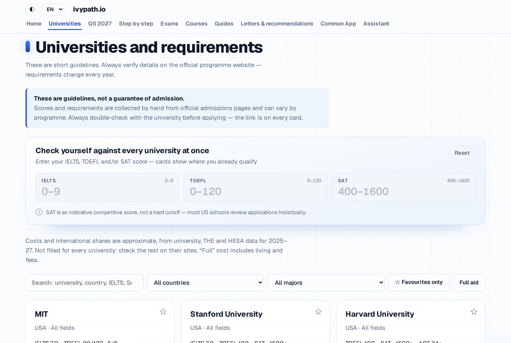
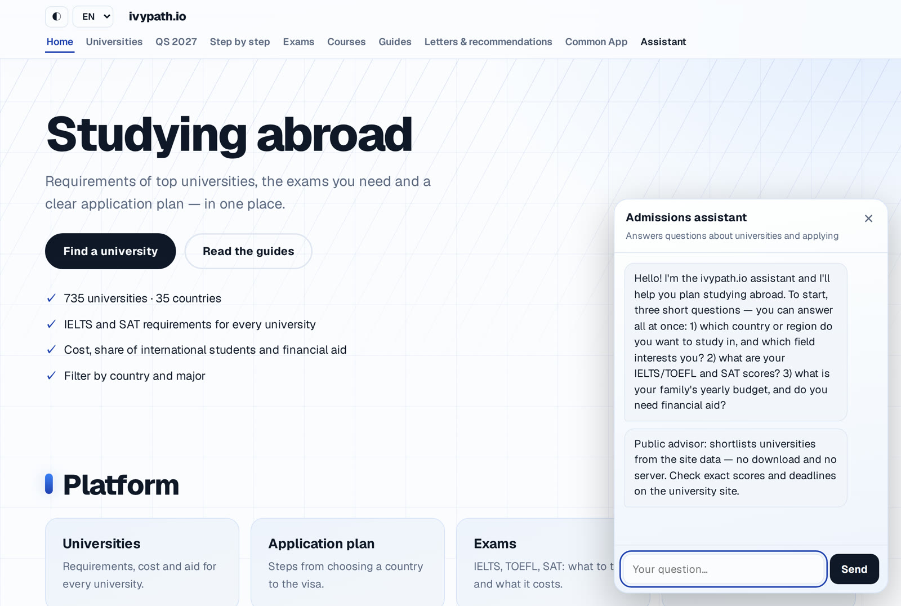

ivypath.io: what does each university actually require?

In one sentence: ivypath.io puts the IELTS, TOEFL and SAT requirements, costs and deadlines of 734 universities in 35 countries on one free page, checks a student's own scores against all of them in one click, and answers follow-up questions with an AI admissions assistant.
The problem
A student from Kazakhstan who wants to study abroad has to open hundreds of university websites. Each one hides its requirements in a different place, states them differently (“IELTS 7.0, no band below 6.5” against “good English required”), and changes them every year. Paid agencies cost money that many families do not have, and the free lists that exist are usually US-only or a few years old. One missed line — a stricter band, an optional SAT that is really expected, a deadline in November — can cost an applicant a whole year.
How it works
The data is one CSV file of 734 universities in 35 countries, collected by hand from official admissions pages with a small Python pipeline: a script fetches a page, proposes the values, a person reviews them, and only then are they written into the data. Every card keeps the link to the page the numbers came from. The site itself is plain HTML, CSS and JavaScript and needs no server; the assistant is a chat call to the class model API, and it answers only from the site data.
Results
A requirement counts as filled only when the card has a score or a checked note saying why there is no score (for example “IELTS not required, English-medium school”). The numbers below are from our coverage script on 30 October 2026.
| Fact on a university card | Universities | Share of all |
|---|---|---|
| Country and field of study | 734 of 734 | 100% |
| IELTS score or checked note | 619 of 734 | 84% |
| TOEFL score or checked note | 611 of 734 | 83% |
| SAT score, note, or approximate target | 595 of 734 | 81% |
Four out of five cards are complete. The United States, the United Kingdom, Germany and Korea are practically finished (USA: 344 of 344 have SAT). The big gaps are China (39 of 107 have IELTS), Canada (45 of 56) and Hong Kong (9 of 11), because those official pages are often in Chinese or behind a programme-by-programme list. Where a university is test-optional we do not write “no data”: we show an approximate target such as “SAT ~1500 (optional)”, taken from the official admitted-student range, and mark it as optional.

Limitations and ethics
The page is a guide, not an admission guarantee: requirements change every year, so each card links to the official site and we tell the reader to check it. The SAT target is approximate, never a cutoff. Coverage is not complete — China, Canada and Hong Kong are the weakest, and costs are filled for fewer universities than scores. The assistant can be wrong; it reads only our own data and is not a consultant. We collect only public information from official pages, the site needs no account, and what it remembers (favourites, language, theme) stays in the visitor's own browser. It is free, and no university pays to be on it.
Cite
@misc{ivypath2026,
title = {ivypath.io: requirements of 734 universities in one place},
author = {FRP 2026 student project},
note = {FRP 2026, ISSAI, Nazarbayev University},
year = {2026}
}